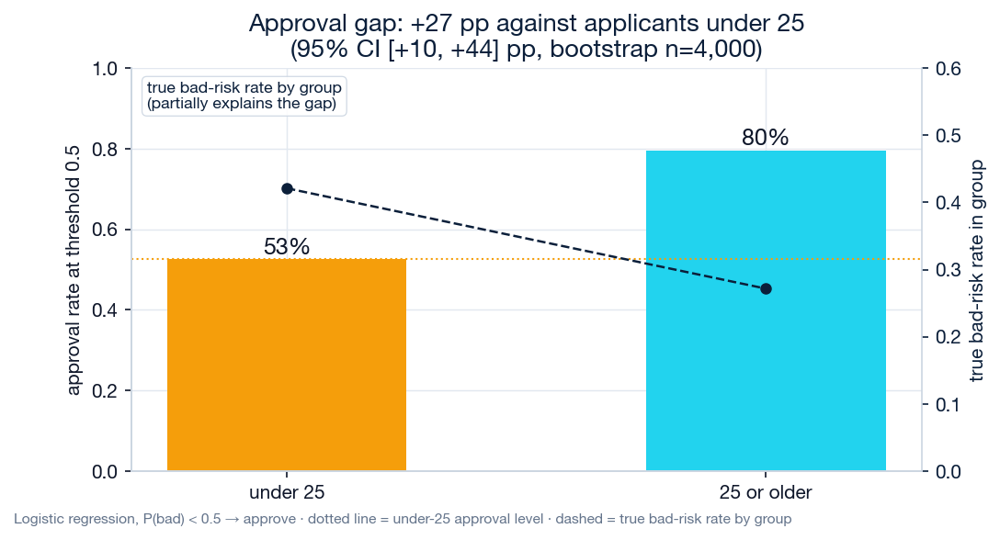
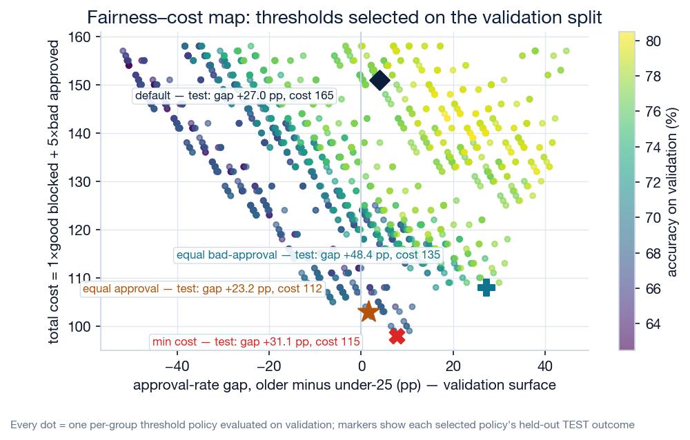

a fairness audit of a loan approval model · Track: AI + Finance · Team: Hao Tan
We audit a credit model on the Statlog German Credit dataset (1,000 applicants, UCI id=144), map every
per-group threshold policy on one honest chart priced as documented (a defaulted approval costs 5×
a blocked good one), and report what survives a validation→test transfer — including what does not.
This project is a prototype and is not financial advice
The problem
Software increasingly decides who gets a loan, often without explanation. A model can quietly approve
80% of applicants aged 25+ while approving only 53% of those under 25 —
and everyone involved may believe it is neutral. Small lenders lack the tools to ask why.
What we built
Input: an applicant's 20 attributes. Output: an approval decision plus an interactive
fairness dashboard — drag per-group thresholds and watch the gap and total cost recompute live on the 200 held-out
applicants. An audit sandbox, not a deployment rule: group-dependent thresholds would be disparate treatment in many
jurisdictions (e.g., ECOA).
What we added (beyond the brief's 4.2.3 steps)
A tested second dimension — with a negative result. Sex reaches the model via the personal-status column;
we dropped it, retrained, re-audited with a bootstrap CI: the gap collapses to +3.0 pp (CI [−9.0, +15.7])
— the signal does not survive, and we report that instead of a headline.
Quantified proxy evidence. Removing age and retraining leaves the gap at +24.4 pp (vs +27.0):
"fairness through unawareness" fails (Kamiran & Calders 2009). Employment history alone carries 16% of
age's variance (η²).
The fairness–cost map — validation-selected, test-stressed. 4,225 per-group policies on a validation split
(non-degeneracy floor: both groups keep ≥40% approval); three landmark policies reported once on test. One transfers,
one does not — see right.
How it works
Data: 1,000 × 20 decoded via the official UCI table; 700 good / 300 bad; stratified 600/200/200
train/val/test (no dates — noted honestly), seed 42; policies selected on validation, reported once on test. Model: logistic regression & random forest; 5-fold CV AUC 0.767 ± 0.028.
Re-runs from the executed notebook + one script + pinned requirements.txt.
How lending works in our country
In China, young applicants often have exactly the thin files this audit worries about — thinner
bureau coverage for under-25s, hard age floors at many online lenders. The audit question is identical even if the data is
1990s German. (General context; no proprietary data.)
Reproduce it
notebooks/fairlens-analysis.ipynb — executed, outputs included · scripts/fetch_data.py → run_analysis.py rebuild everything ·
dashboard/index.html interactive sandbox · results/results.json — single source of truth.
Results — baseline vs model (held-out test, n=200)
accuracy
bad caught/60
good blocked
AUC
Approve everyone (baseline)
70.0%
0
0
—
Logistic regression @0.5
75.5%
31
20
0.792
Random forest @0.5
74.5%
20
11
0.775
The gap — and its honest context

Approval rates by age group at the default
threshold: +27.0 pp (bootstrap CI [+10.0, +44.5] — wide is honest at ~38 young applicants per split). Dashed line: each
group's true bad-risk rate — part of the gap is real risk. The model also errs most where the audit points: error rate
31.6% on under-25s vs 22.8% on others.
Every policy, priced — and the transfer test

Thresholds selected on the validation split;
markers carry test outcomes. The equal-approval policy's cost (112 vs 165) and recall (47/60 vs 31/60) do transfer
(DM-weighted: −40%), but its near-zero validation gap does not: test gap +23.2 pp. Equal bad-risk-approval transfers
worse (+48.4 pp). Even the default policy swings (+4.0 pp val → +27.0 pp test): point estimates move with the split — the CI
is the honest summary.
Where it fails. 3 of 5 shown errors are approved bad risks — the worst: a 51-year-old with clean
credit history, P(bad)=0.06 → approved → defaulted; none of the five is under-25 — the gap lives in approvals, not only
errors. Next: equalized-odds audits on larger data; re-test on LendingClub.
model accuracy
75.5% vs 70.0% baseline
bad risks caught: 31/60 vs 0/60
approval gap
+27pp
95% CI [+10, +44] · honest width
fair policy, test outcome
cost 112 vs 165
recall 47/60 vs 31/60 — but gap does not transfer
metric choice
flips
accuracy: worse · cost & recall: better
Sources — Data: Statlog German Credit, UCI ML Repository (id=144), loaded via ucimlrepo · Fairness background: Kamiran & Calders (2009); Hardt, Price & Srebro (2016) ·
Tooling: scikit-learn, pandas, matplotlib (pinned in requirements.txt) · Brief: Veritas AI International High School Hackathon 2026, Project Briefs §4.2.3 ·
AI tools: ZCode (AI coding assistant) wrote and debugged the analysis under the team's direction; every number reproduces from
notebooks/fairlens-analysis.ipynb · Interactive demo: dashboard/index.html · Contact: 3506004191@qq.com